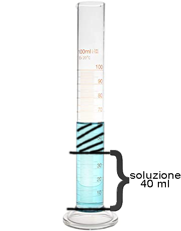

22/04/2021
Riprodurre una soluzione dopo aver calcolato la massa del soluto dati il volume della soluzione e la molarità del soluto
Nell'immagine a lato, possiamo osservare il risultato finale dell'esperimento: una soluzione di 40ml contenente 0.64g di solfato di rame (CuSO4)
La soluzione è una miscela omogenea in cui una o più sostanze sono contenute in una fase liquida o solida o gassosa; contiene particelle diverse mescolate e distribuite in modo uniforme nello spazio disponibile in modo che ogni volume di soluzione abbia la medesima composizione degli altri.
La molarità è concentrazione di una soluzione espressa dal numero di moli di soluto disciolte in un litro di soluzione (simbolo M ).
La mole è l'unità di misura della quantità di sostanza.
Inizialmente ho elaborato i dati calcolando il numero di moli del soluto e poi la sua massa.
Dopo essermi munito degli strumenti necessari, ho eseguito la tara del cilindro sulla bilancia. È stata versata una quantità parziale di acqua distillata tramite la spruzzetta per disciogliere il solfato di rame (versato con una spatola): grazie alla bacchetta ho velocizzato il processo ed infine ho portato a volume la soluzione aggiungendo altro solvente
Vsoluzione = 40ml
M = 0,1 mol/l
Per prima cosa ho convertito il volume da millilitri a litri:
V = 40ml = 0,04l
Sapendo che: n(mol) = V(l) · M(mol/l)
0,4l · 0,1mol/l = 0,004mol
Osservando la tavola periodica, possiamo notare che la massa molare del solvente è di 159,62. Per trovare la massa bisogna fare: m(g) = n(mol) · Mm
0,004mol · 159,62 = 0,6385g
L'esperimento può essere considerato riuscito in quanto, paragonando diverse soluzionioni pressocchè identiche, si riscontra la stessa colorazione del fluido.